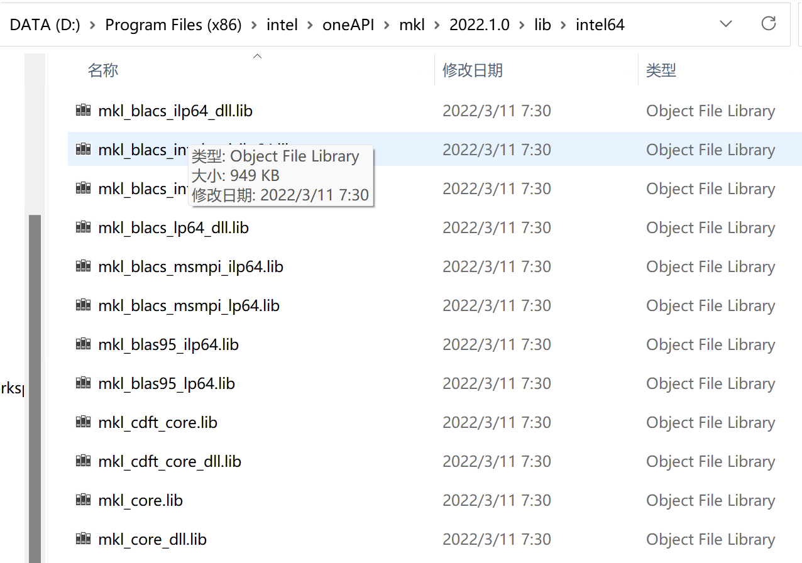
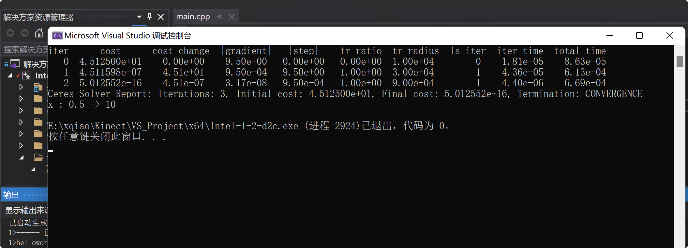

Windows 下编译 Ceres
Main
1. 编译依赖及相关版本
- Windows 11
- VS 2019 Community
- CMake GUI 3.23
- Ceres-solver 1.14.0
Release 1.14.0 · ceres-solver/ceres-solver (github.com) - Eigen 3.3.7（3.3.8 存在 bug，编译 Ceres 时会报错）
Eigen 3.3.7 · libeigen / eigen · GitLab - gflags 2.2.2
Releases · gflags/gflags (github.com) - gflog 0.6.0
Release google-glog 0.6.0 · google/glog (github.com) - suitesparse-metis-for-windows 1.5.0
Releases · jlblancoc/suitesparse-metis-for-windows (github.com) - Intel MKL
Get Intel® oneAPI Math Kernel Library
2. 编译步骤
由于要编译和安装的库比较多，于是参考链接[1] 建立了一个文件夹来统一存放

buildDir 用来存放安装后的 include 和 lib 文件，buildSrc 用来存放需要编译的源码文件，originFiles 则用来存放下载的原始代码包，后续 CMake 里面都注意修改安装的最后路径（一般是 CMAKE_INSTALL_PREFIX）。
2.1. 安装 MKL 库
Get Started with Intel® oneAPI Math Kernel Library
从链接下载 oneAPI exe 安装，安装完成后可以在目录下看到 mkl 的相关库

后续主要使用 mkl_intel_Ip64.lib 和 mkl_intel_Ip64_dll.lib
2.2. 编译 glog 和 glag
两个在编译过程中，都注意去掉 BUILD_TESTING 选项，同时选中 BUILD_SHARED_LIBS 以便生成.dll文件。如果该项不存在通过“Add Entry”手动加入，后续程序运行时可能会提示需要 glog 或 gflag.dll 文件。
2.3. 编译 Eigen
Eigen 库本身是不需要安装的，这里为了将其与其他库统一位置方便来安装。这里编译选项中也取消掉 BUILD_TESTING 选项即可。
2.4. 编译 SuitesParse
根据参考链接[1] 这步也可以只生成静态库
这步比较麻烦，通过使用 suitesparse-metis-for-windows 编译框架，里面已经自带了相应版本的 SuitesParse 代码，如 1.3.1 版本中版本为 Bundled versions: SuiteSparse 4.5.1, Metis 5.1.0。下面分两步来执行
首先生成静态库，编译选项中不选择 SHARED 和 HAVE_COMPLEX，按照步骤编译生成。然后再生成动态库，这次编译选项中选择 SHARED 其余不变，然后再次编译工程安装。
2.5. 编译 Ceres
终于到了最后一步，开始添加和新建各种相关的环境路径了。分三小步来进行方便配置
- 依赖配置
根据情况如果自动找到了就不需要配置，主要是如下几个gflags_DIR： D:/3DAT_Environment/buildDir/gflags/lib/cmake/gflagsglog_DIR：D:/3DAT_Environment/buildDir/glog/lib/cmake/glogEigen3_DIR： D:/3DAT_Environment/buildDir/eigen/share/eigen3/cmakeSuritesParse有点多，如下图所示几个
BLAS_LIBRARIES：D:/3DAT_Environment/buildDir/suitesparse/lib64/lapack_blas_windows/libblas.libLAPACK_LIBRARIES：D:/3DAT_Environment/buildDir/suitesparse/lib64/lapack_blas_windows/liblapack.libCMAKE_INSTALL_PREFIX：D:/3DAT_Environment/buildDir/ceres
- 依赖勾选
- LAPACK 选中：ceres直接使用LAPACK
- CUSTOM_BLAS: 选中，使用手动编码的blas代替eigen(通常更快)
- SUITESPARSE：选中，为了加速稀疏矩阵的运算
- gflags: 选中
- 其他编译选项
- BUILD_EXAMPLES 取消勾选。为了节省后续编译时间。
- BUILD_TESTING 取消勾选，为了节省后续编译时间。
- BUILD_SHARED_LIBS 勾选，以便生成动态链接库文件。
- CMAKE_BUILD_TYPE 设为 Release
通过以上填写后 Configure 和 Generate 后，应该可以看到成功的输出结果
3. 配置工程环境变量
在系统环境变量 PATH 中加入以下 4 个地址

然后在 VS 工程中加入 Ceres 及相关库的 include 和 lib 路径，下面编译运行官方 Example 示例进行测试
1 | // A simple example of using the Ceres minimizer. |

参考链接
[1]. (72条消息) Windows Ceres 编译安装_blanklog的博客-CSDN博客_windows编译ceres
[2].Ceres Solver 在Windows下安装配置笔记 - 程序员大本营 (pianshen.com)
[3]. (72条消息) error C2589: “(”: “::”右边的非法标记 error C2059: 语法错误 : “::”_hgj 每天快乐学习的博客-CSDN博客
[4].Ceres Solver 的编译 - Jinyu Li